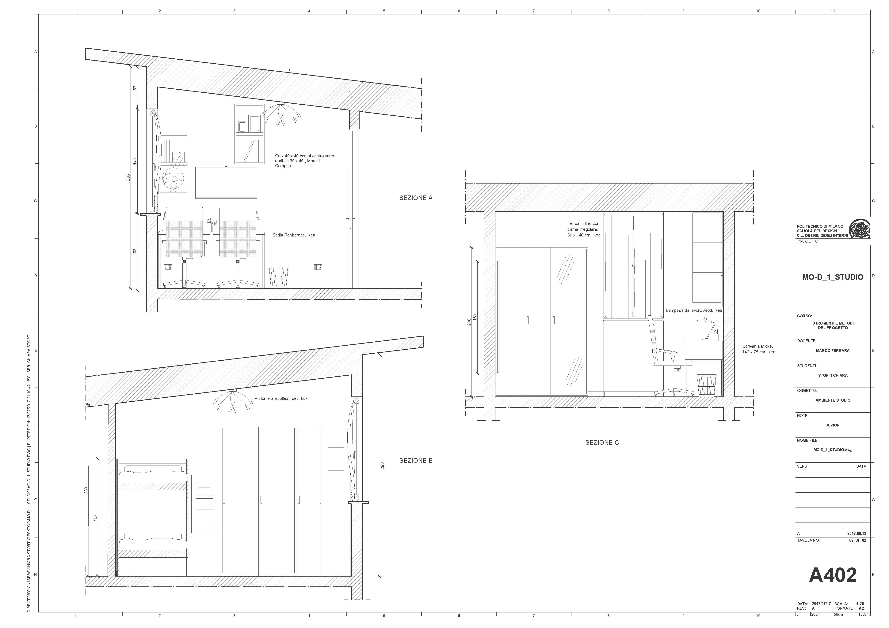
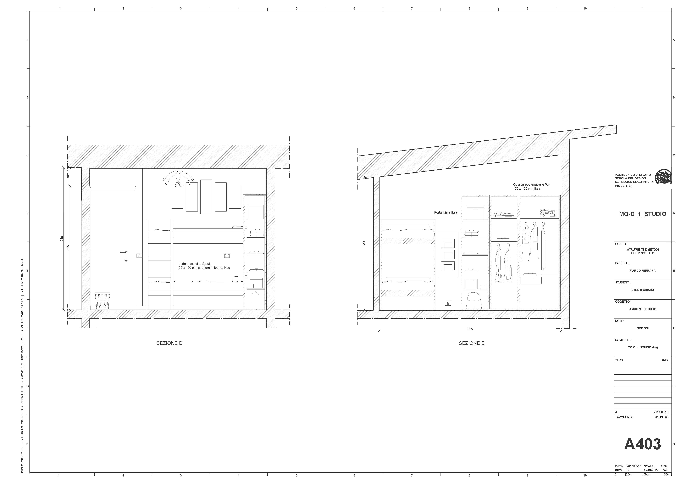
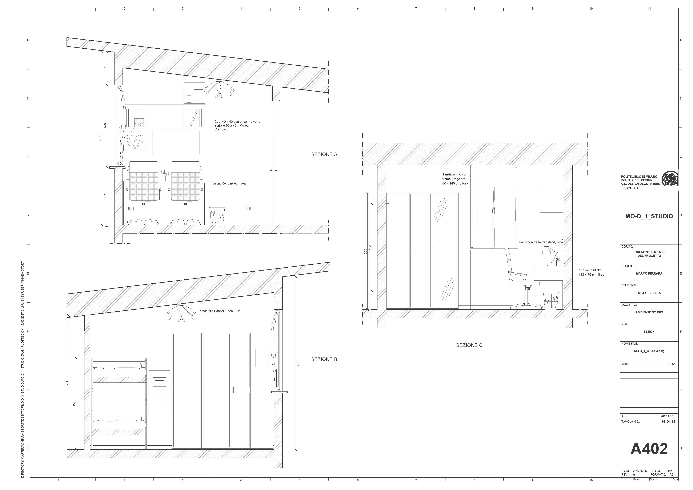
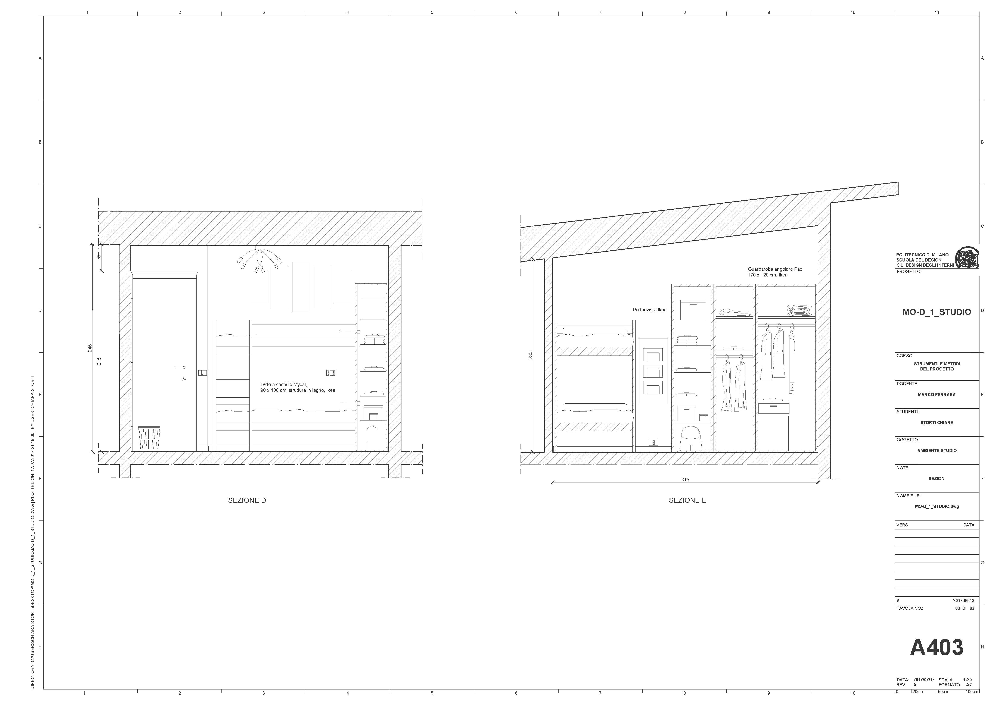

AMBIENTE STUDIO
L'ambiente studio presenta un'area di 9 mq ed è stato pensato per due persone. Al suo interno si possono individuare due aree: una adibita a zona lavoro, l'altra utilizzata come zona notte. E'un locale privato, in cui l'utente può dedicare il proprio tempo allo studio, alla lettura e alle proprie passioni utilizzando gli arredi presenti all'interno. Si trova al secondo piano del'abitazione con ingresso alla destra delle scale. Dispone di un'ottima luminosità grazie alla presenza di una finestra, situata al lato della scrivania. E' possibile accedere a un piccolo terrazzo tramite una porta-finestra posizionata appena prima della porta d'entrata della stanza.
IL PROGETTO
Appena entrati nella stanza, alla propria sinistra si trova un letto a castello, con struttura in legno. Di fronte all'ingresso è presente una scrivania bianca con due postazioni, composte da una seduta, una lampada e un portapenne. Sopra questa sono appese una lavagna e una libreria formata da cubi ripetuti. Sulla parete opposta è situato un armadio ad angolo suddiviso in quattro parti attrezzate con ripiani, appendiabiti e contenitori di dimensioni varie. Tra l'armadio e il letto è appeso alla parete un portariviste.
 



NEL DETTAGLIO
L'ambiente è analizzato più nello specifico attraverso disegni esecutivi degli arredi componibili, la maggior parte firmati ikea, che arredano la stanza. In particolar modo sono stati analizzati tre prodotti attraverso tavole tecniche.
- SCRIVANIA MICKE 902.143.08 Clicca per visionare il prodotto originale
- LIBRERIA BILLY 390.178.39 Clicca per visionare il prodotto originale
- SEDIA RENBERGET 230.394.20 Clicca per visionare il prodotto originale
- LETTO A CASTELLO MYDAL 001.024.52 Clicca per visionare il prodotto originale
- GUARDAROBA PAX 291.288.47 Clicca per visionare il prodotto originale
Misure del prodotto Lunghezza: 142.0 cm Larghezza: 50.0 cm Altezza: 75.0 cm
Descrizione del prodotto Piano tavolo: legno Base: Acciaio cromato, Plastica propilenica
Misure del prodotto Larghezza: 120.0 cm Profondità: 28.0 cm Altezza: 237 cm
Descrizione del prodotto E' composta da due parti: la libreia e l'elemento top come copertura. Libreria formata da le parti principali in truciolare, lamina, plastica propilenica Pannello di fondo in fibra di legno, lamina e lacca Elemento top in truciolare, lamina, plastica propilenica Montante/ Pannello di fondo: Truciolare, Lamina, Plastica propilenica, CartaAnta: Fibra di legno, Lacca acrilica, Lacca poliestere
Misure del prodotto Testato per: 110 kg Larghezza: 59 cm Profondità: 65 cm Altezza massima: 108 cm Larghezza sedile: 49 cm Profondità sedile: 42 cm Altezza minima sedile: 38 cm Altezza massima sedile: 50 cm
Descrizione del prodotto Sedile: rivestito in tessuto 75% poliestere, 25% cotone, 100% poliuretano Struttura schienale: Acciaio rivestimento epossidico/poliestere a polvere Imbottitura del sedile: Poliuretano espanso
Misure del prodotto Altezza: 157 cm Larghezza letto: 97 cm Lunghezza letto: 206 cm Lunghezza materasso: 200 cm Larghezza materasso: 90 cm
Misure del prodotto Profondità: 60 cm Altezza: 201.2 cm Larghezza destra: 196 cm Larghezza sinistra: 196 cm